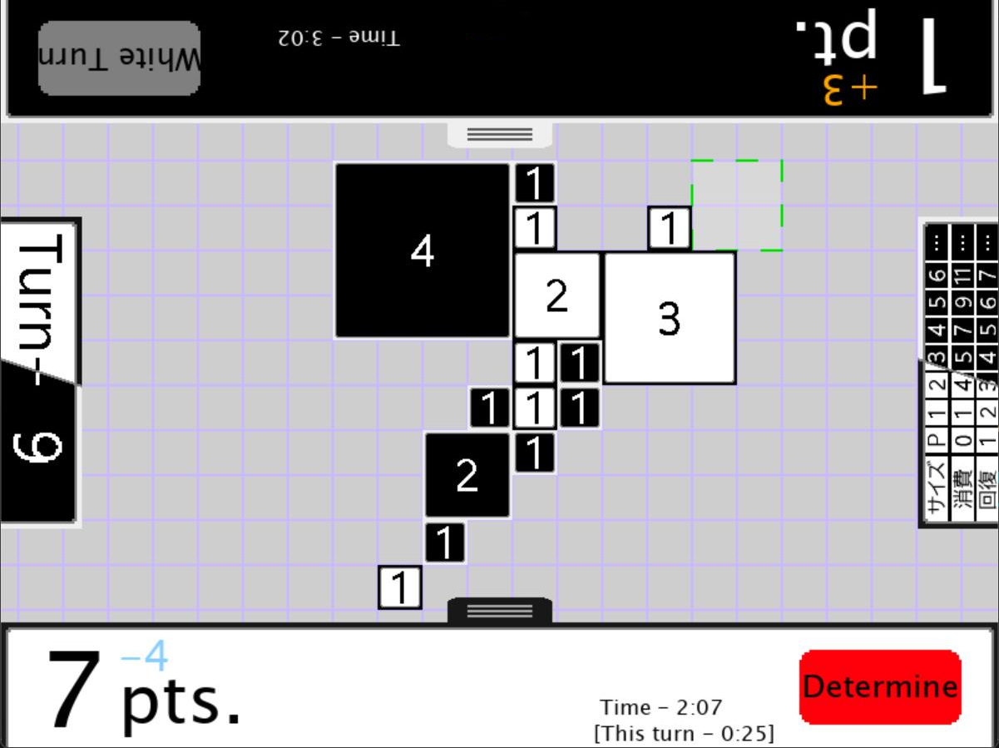
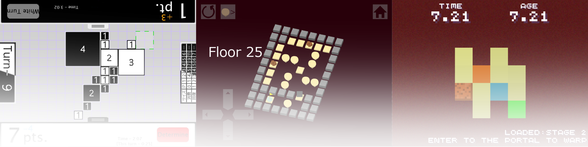

超・五目並べ
五目並べに、より大きい駒が追加された！
単純なルール性ながら奥深い、超・進化した五目並べ。
2人対戦が想定されます。
バージョン: 1.0 (最終更新: 2025/2)
対応OS : Windows10,11

クェゼリン環礁のゲーム置き場
五目並べに、より大きい駒が追加された！
単純なルール性ながら奥深い、超・進化した五目並べ。
2人対戦が想定されます。
バージョン: 1.0 (最終更新: 2025/2)
対応OS : Windows10,11
単純なルールの上で作られた激ムズパズルを、あなたはクリアできるか?
全32ステージ。必ずしも難易度順ではないので注意。
バージョン: 1.0 (最終更新: 2024/11)
対応OS : Windows10,11
小さいステージ。クリア条件は、ゴールにたどり着くこと、ただそれだけ。
...ところで、ステージの中にワームホールが発生したようだ。
どうやら、このワームホールには時間を巻き戻す作用があるらしい。
...くれぐれもこれには触れない方がいい、あなたが引き起こしたタイムパラドックスが世界を壊すかもしれない。